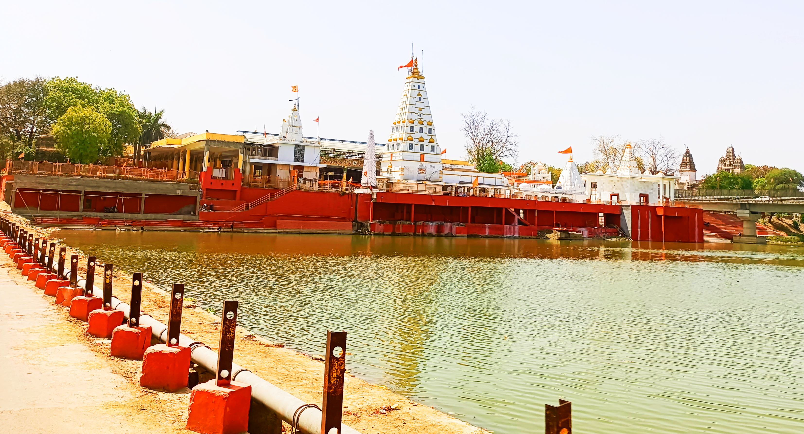
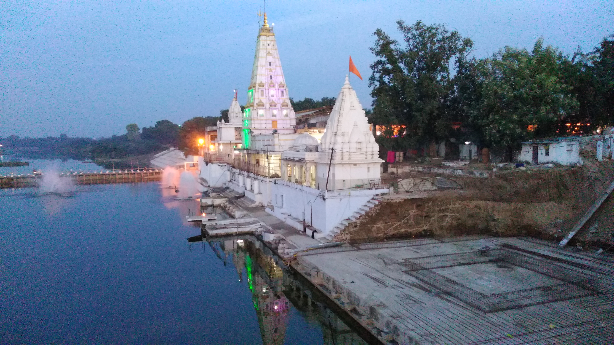
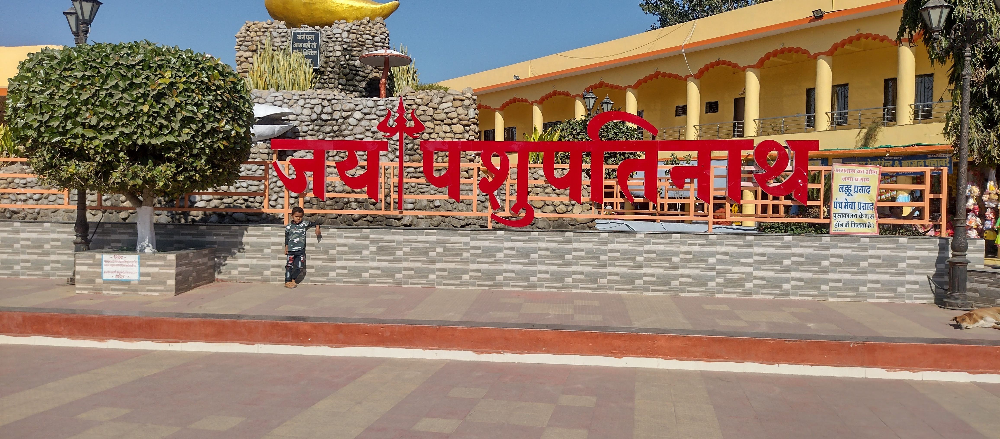
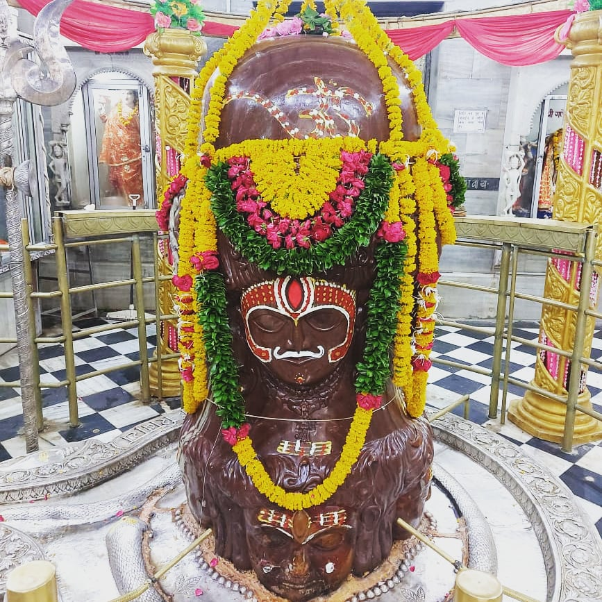
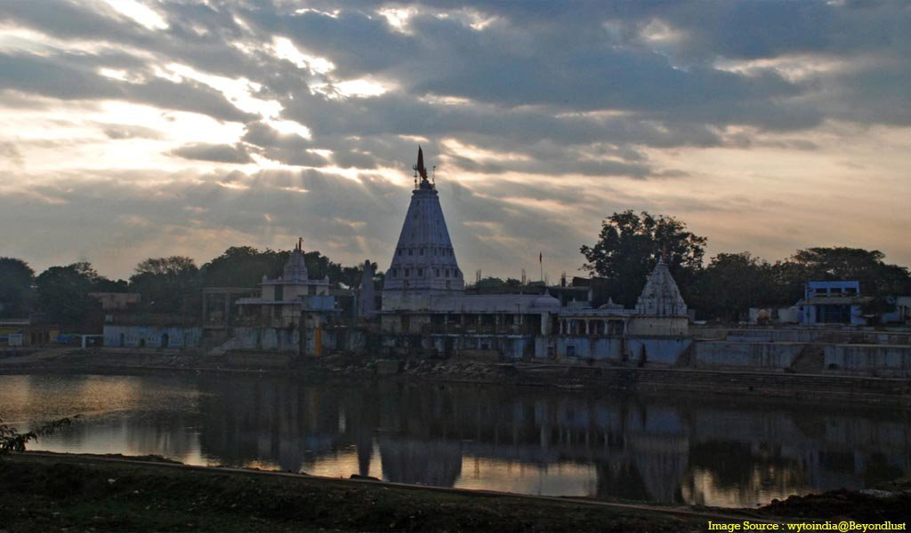

Pashupatinath Temple at Mandsaur also referred to as the Mandsaur Shiva temple is a Hindu temple dedicated to Lord Shiva in Mandsaur, Madhya Pradesh, India. It belongs to Pashupatinath tradition which is one of 6 major tradition within Shaivism. It is located on Shivna River, and is known for its eight-face Shiva Linga. The temple sculpture is dated to the 5th or 6th century based on inscriptions, with some referring to the site as Dashapura. It is near the Rajasthan border in the historic region of Malwa, about 200 kilometres (120 mi) from Indore, about 340 kilometres (210 mi) west of Udaigiri Caves and about 220 kilometres (140 mi) east of Shamalaji ancient sites, both asignificant source of Gupta Empire era archaeological discoveries. The site has been important to dating and hearchitectural studies of some distant sites such as the Elephanta Caves.
The site's history is traceable to the 2nd-century CE when it wasalready a Hindu pilgrimage site. It is mentioned by the ancient Indian poet Kalidasa, who praises the women of Dashapura as"so practiced in their seductive movements". Ten inscriptions found in the area suggest the Mandsaur site was an important cultural and religious center in the first half of the 1st millennium CE. Nine of these inscriptions are Sanskrit poems, most dated between 404 and 487 CE, and all include invocations to Hindugods such as Vasudeva and Shiva in various forms. They mention kings of Gupta Empire era, as well as temples of Dashapura. Together with dozens of temples discovered at anumber of sites in western Madhya Pradesh, eastern Rajasthan and northern Gujarat region, the Mandsaur site with the Shiva Stele and the temple reflect what Stella Kramrisch called one of the "Western schools" of ancient and early medieval Indian art. James Harle concurs and includes the nearby Sondni and Khilchipura sites to the Western school along with regions fartherwest. According to Harle, the sculpture from the temple and other archaeological findings such as the Mandsaur inscriptions –one of which he calls "the longest and certainly the most beautiful of the Gupta inscriptions" – reflect the "flavor of life atits best in Gupta times".
The inscriptions, state Harle and other scholars, suggest that the sculpture and temples of Mandsaur were built with resources pooled by the common people, such as silk weavers of Dashapura (Mandsaur) who had settled there from Gujarat. However, these inscriptions mention a Surya(Sun) temple, a Vishnu temple and others. They do not mention the Pashupatinath temple. Excavations have yielded several brick temples of Shiva which have been dated to the 6th century,suggesting that Shiva was a prominent deity along with others in ancient Mandasaur. Additionally, only the foundations of most early temples and monuments are presently identifiable, as the Buddhist, Hindu and Jain temples in Mandsaur were demolished and its stones and relief panels used to build a Muslim fort after the region was conquered in the late medieval era.
The eight face Shiva found in the reconstructed Pashupatinath temple is from the 1st millennium CE and a rare iconography. It is 4.5 metres (15 ft) tall and was discovered in the river bed of the Shivana. It has been reconsecrated into the temple. The upper part of the linga has four heads in a line, while the other four heads are carved below them in the second line. The faceshave open eyes, with the third eye on their forehead visible. Each face has elaborate hair probably reflecting the culture of its time for men. Each wears jewelry such as earlobes, necklace and more. The eight faces represent the various aspects of Shiva in regional Shaivism theology: Bhava,Pashupati, Mahadeva, Isana, Rudra, Sharva, Ugra and Asani. It is sometimes referred to as Ashtamukha or Ashtamurti. According to Goyala, this Mandsaur linga is likely from the early 6th century.
पशुपतिनाथ मन्दिर भारत देश के मध्य प्रदेश राज्य के मन्दसौर जिले में स्थित एक प्राचीन मन्दिर है। यह मन्दसौर नगर में शिवना नदी के किनारे स्थित है। पशुपतिनाथ की मूर्ति पूरे विश्व में अद्वितीय प्रतिमा है ये प्रतिमा इस संसार की एक मात्र प्रतिमा है जिसके आठ मुख है और जो अलग-अलग मुद्रा में दिखाई देते है इस प्रतिमा की भी अपनी कहानी है ! मंदसौर के ही एक उदा नाम के धोबी द्वारा जिस पत्थर पर कपड़े धोये जाते थे, वही पत्थर भगवान पशुपतिनाथ की मूर्ति थी ! बताया जाता है कि एक दिन वह गहरी नींद में सो रहा था तो उसे स्वयं भगवान शंकर सपने में आये और उसे बोले कि तू जिस पत्थर पर अपने व लोगो के मेले कपड़े धोता है वही मेरा एक अष्ट रूप है ! यह सुनकर उस धोबी ने सुबह अपने दोस्तों को यह बात बताई और सब ने मिलकर उस मूर्ति को नदी के गर्भ से बाहर निकाला ! मूर्ति इतनी विशालकाय ओर भारी थी कि 16 बेलों की जोड़ी भी उसे खीचने में असमर्थ हो रही थी, पर लोगो की मदद से मूर्ति को निकाला गया ! मूर्ति को नदी के उस कोने से इस कोने पर जब लाया जा रहा था तब एक चमत्कार हुआ मूर्ति उस कोने से इस कोने आ तो गई परन्तु मूर्ति को नदी से दूर एक उचित स्थान पर स्थापित करने बेलो की सहायता से ले जाया जा रहा था तो वह जैसे नदी से दूर जाना नही चाह रही थी जिस जगह आज मूर्ति स्थापित है वही जगह जहां से मूर्ति हिली ही नही! आज उस जगह पर भगवान पशुपतिनाथ का विशालकाय मंदिर स्थापित है ! मूर्ति को निकालने के वक्त से लगभग 18 सालो तक मूर्ति की स्थापना नही हो पाई थी क्योंकि उस वक्त संसाधनों का बहुत अभाव हुआ करता था ! कहा जाता है वहां के एक सज्जन पुरुष श्री शिवदर्शन अग्रवाल द्वारा मूर्ति को अपने बगीचे में संभालकर रखा गया था ! भागवताचार्य श्री श्री 1008 स्वामी प्रत्यक्षानंद जी द्वारा मूर्ति की प्राण प्रतिष्ठा की गई थी व बाद में ग्वालियर स्टेट की राज माता श्री विजयाराजे सिंधिया द्वारा एक विशाल मंदिर का निर्माण करवाया गया एवं मंदिर शिखर पर स्वर्ण कलश को स्थापित किया गया ! महादेव श्री पशुपतिनाथ की मूर्ति को एक ही पत्थर पर बहुत ही आकर्षक तरीके से बनाया गया है !





